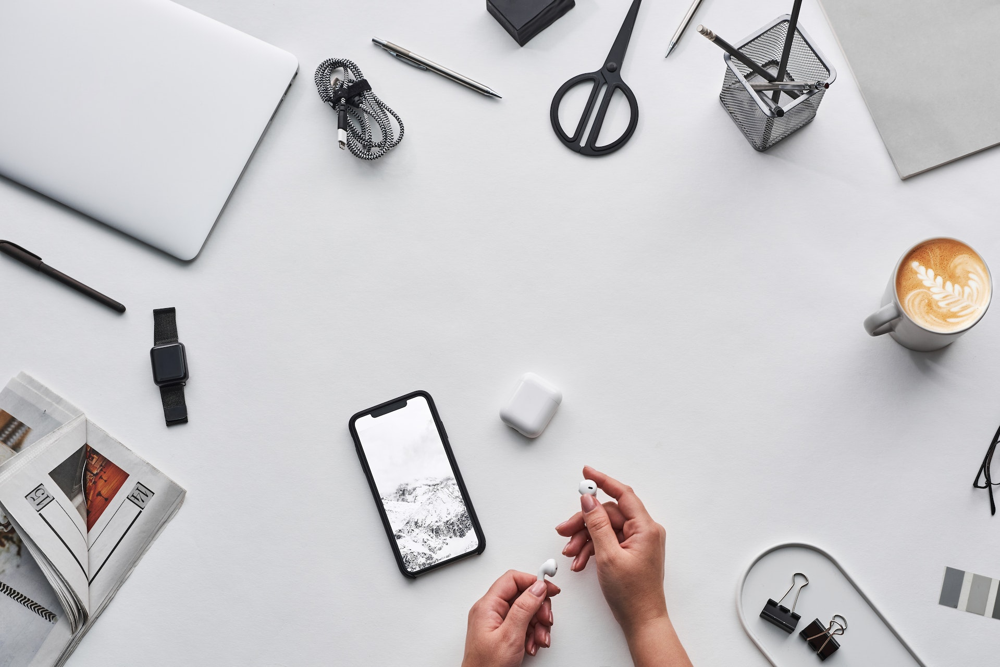
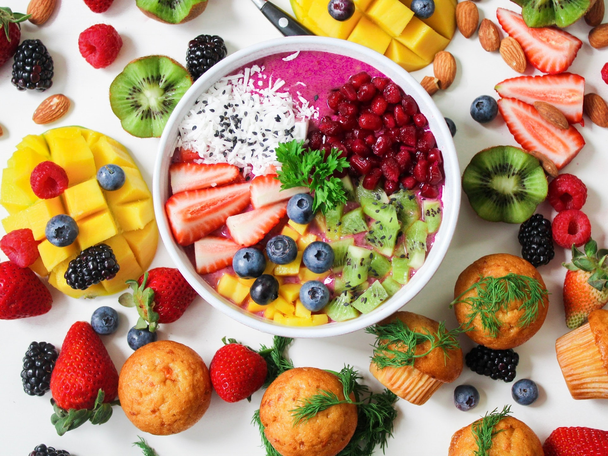
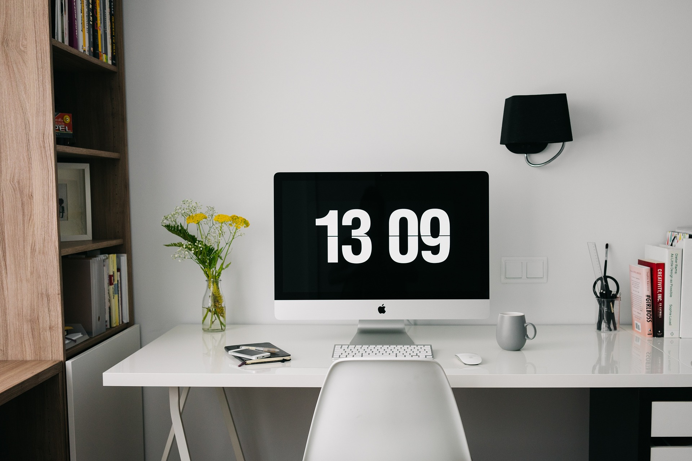
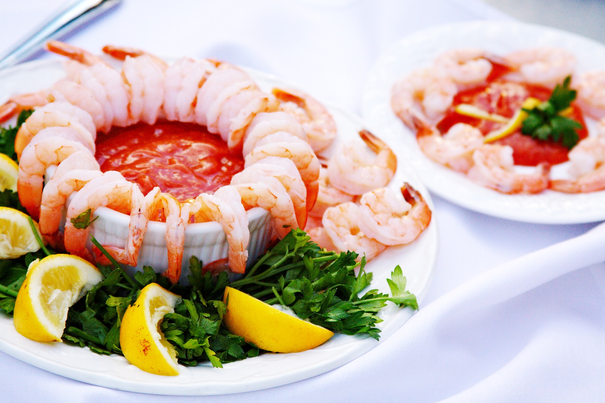

Latest reads
Choose a topic to narrow the list.
All posts
Tech
Food
News

Tech
Small design choices that make a website easier to use
4 min read
Clear labels, comfortable spacing, and useful feedback can make a site feel simpler without adding more features.
Vikram Aditya

Food
A weeknight meal built around what is already in the kitchen
3 min read
A flexible meal plan starts with a few pantry staples, seasonal vegetables, and a sauce you can make in minutes.
Vikram Aditya
Food
A more relaxed way to plan lunch for a busy week
5 min read
Prepare a couple of basics ahead of time, keep the combinations simple, and leave room to change your mind.
Vikram Aditya
News
Before sharing a headline, take a moment to check the source
4 min read
Look for the original report, check when it was published, and separate what is confirmed from what is still unclear.
Vikram Aditya

Tech
Five small browser habits that can save time every day
3 min read
A tidy bookmark bar, a few useful shortcuts, and sensible tab habits can make everyday browsing less chaotic.
Vikram Aditya
News
Why local stories deserve more than a quick glance
4 min read
Community reporting can explain the decisions, people, and everyday changes that larger headlines often miss.
Vikram Aditya
Tech
A simple folder structure for keeping a small project organized
5 min read
Naming files consistently and keeping assets in one place makes a project easier to return to and share with others.
Vikram Aditya
News
A quick checklist for judging whether an online claim is reliable
6 min read
Trace the claim to its source, look for independent confirmation, and be cautious when a post leaves out context.
Vikram Aditya

Food
Make a simple pantry meal feel a little more special
3 min read
Fresh herbs, a squeeze of citrus, toasted spices, or a crunchy topping can bring new life to familiar ingredients.
Vikram Aditya
No posts in this category yet.
These cards are sample content for a static blog demo. The titles do not link to full articles yet.